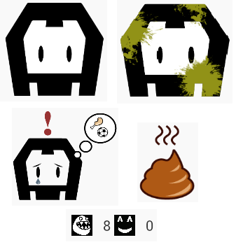

Bienvenido a Cordova Pet. Un juego desarrollado con ayuda de Apache Cordova con el que podrás crear tus propias mascotas, cuidarlas y tener un listado de tus mascotas ya perecidas. A continuación te explicamos el manejo de la aplicación.
En la pantalla de inicio se puede entrar en:
- jugar para comenzar el juego
- cementerio para ver las mascotas muertas
- tutorial para aprender a jugar
- Créditos para ver los desarrolladores del juego
El juego consiste en mantener a nuestra mascota viva y contenta, para ello hay que lograr que la salud no llegue a cero.
Para ello debemos de utilizar los botones de los que disponemos para evitar que nuestra mascota, se ensucie, se haga caca, observando las llamadas de atención que nos hace nuestra mascota y los marcadores de necesidad:

La salud comienza a bajar cuando el indicador de hambre llega a 10 o cuando el de diversion llega a 0. Para evitar esto hay que utilizar los siguientes botones:
El botón dar de comer, reduce en uno el hambre de nuestra mascota y al pulsar sobre él nuestro dispositivo vibrara brevemente (siempre que tenga el dispositivo de vibración)
El botón de jugar accede al beep, sonando similar a los wassap (si tu dispositivo lo contempla), y sube automáticamente la diversión a 10.
Cuando nuestra mascota juega 5 veces se ensucia, y si come 5 veces se hace caca, con el botón de limpiar hacemos que nuestra mascota se quede limpia de nuevo.
Con el botón de dormir se guarda la mascota y el programa se va al menú donde podemos salir del programa. De este modo al entrar de nuevo a la aplicación seguiremos jugando con la misma mascota.